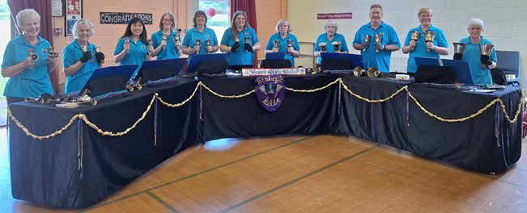

Bishop's Bells Handbell Ringers
Bishop's Bells Handbell Ringers is a team of fifteen ringers who meet weekly, on a Tuesday evening, at St Peter's Church in Bishops Waltham. There are 54 bells in our set, some of them over 160 years old and others bought more recently with grants and donations. We are a very friendly group and always keen to welcome new ringers.
We regularly perform at the Womens' Institute, social groups for the elderly and the disabled, childrens' groups and church groups. These performances include a talk on the history of Bishop's Bells and handbell ringing, a demonstration of handbell ringing by six or more members of the team, and the opportunity for the audience to have a go.
The whole team performs at the Christmas services at St Peter's Church, and occasionally takes part in other concerts.
This year, 2024, is a very special year for Bishop's Bells as we are celebrating our 40th birthday. We held a rally in June, where we invited local handbell teams to come and spend the day playing with us - and eating cake! On 23 November, we held a 40th birthday concert with Flautissimo: The Southampton Flute Orchestras, who are also celebrating their 40th birthday.
If you would like to try playing handbells, or are interested in booking Bishop's Bells to perform at your group, please email Sandy.